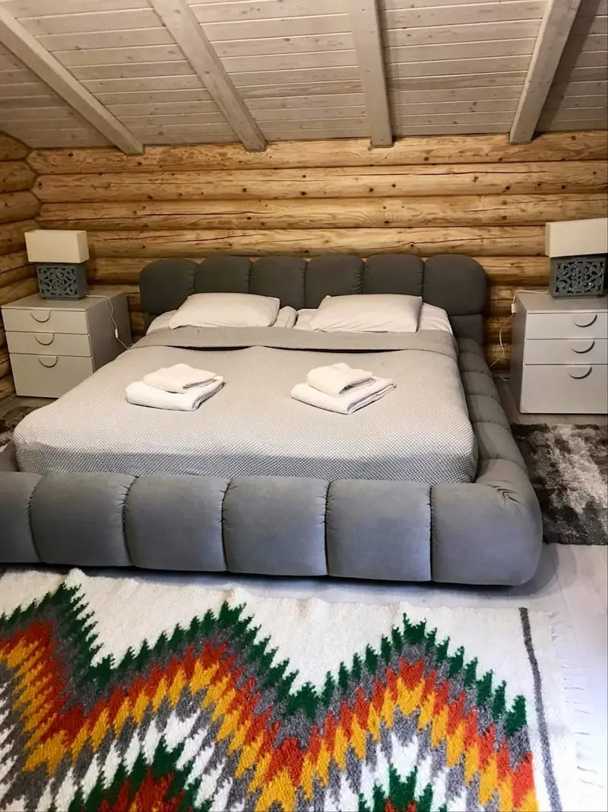

01 / 04
Вежа
5 поверхів · 3 спальні · до 7 гостей
Джакузі на терасі першого поверху, тепла підлога, спальні з власними терасами на кожному поверсі. Нагорі — оглядовий зал з телескопом і настільними іграми.
від 10 000 ₴ / ніч